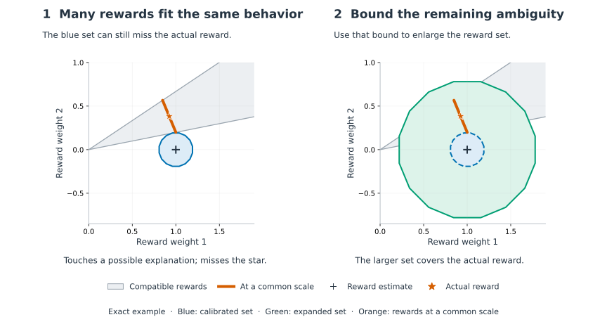
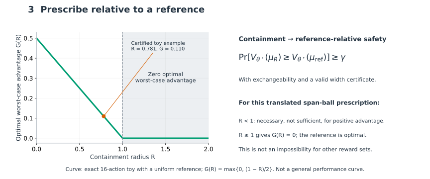
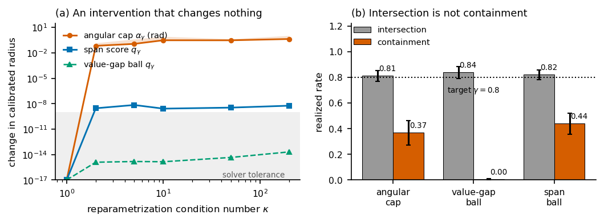

The question
Conformal inverse optimization (CIO) handles the one-shot version of this problem: fit a point estimate, calibrate a radius on held-out decisions, then optimize robustly over the resulting set. The recipe reads as if it ports to inverse reinforcement learning. This paper reports what happens when it is carried over, component by component. The conformal rank argument transfers; the score and the interpretation of its guarantee require care in IRL's reward geometry.
CIO already states intersection coverage and assumes an inverse-set diameter bound. This work adapts those ingredients to normalized occupancy-span geometry and quantifies their consequences for a specific robust prescription.
The core idea
Calibrate in behavior-relevant reward geometry; distinguish intersection from containment; use an identification certificate before prescribing safely.




Explanatory figures added after acceptance; the original paper figures and accepted submission are preserved. Reproduce with make overview without running experiments.
Geometry, coverage, and the cost of prescription
Coordinates the problem never fixes
CIO scores a demonstration by an angle between reward vectors. A feature reparameterization that changes no reward and no demonstrator's policy still moves the calibrated angular radius.
24° on average at κ = 200, ours 2×10−8
Which distance you score picks the guarantee
The nearest point to the cone of rewards explaining new behavior certifies intersection with that cone. The farthest point of the normalized cone certifies containment of the normalized latent reward. The minimum score admits a general LP formulation; the maximum is solved exactly in the special case added below.
0.82 vs 0.44 at a 0.80 target
What containment costs
Given a certified cone width η, the radius becomes R = min{2, 2q + η}, and R ≥ 1 gives zero optimal worst-case advantage for this ball-based objective. At R > 1 every optimum is feature-equivalent to the reference; at equality, other optima may tie.
Hypothetical η = 0.2: 76.7% meet R < 1
This is a necessary condition for positive robust advantage, not a measured improvement rate.
The two failures, measured

Limits of the original experiments
E1–E3 do not exercise a positive safety certificate. They use the universal bound η = 2, which makes R = 2 and returns the reference. The certified policy loses to the point estimate in every cell of Table 2, and the Stage-I policy wins in only two of six.
The theorem explains the return to the reference, not its regret relative to the point estimate. Its threshold concerns this particular ball and objective; it does not establish an impossibility for all safe decisions from partially identified rewards.
Post-acceptance supplement · 6 October 2026
A one-state MDP with two reward features makes each normalized reward cone a line segment. Its endpoints certify the full cone width and the farthest-distance score exactly. No sampled latent rewards are used to certify either quantity.
| Actions | Exact η | Radius R | Worst-case advantage |
|---|---|---|---|
| 16 | 0.397825 | 0.780508 | 0.109746 |
| 4 (control) | 2 | 2 | 0 |
In the 16-action case, exact farthest-score calibration further reduces the radius to 0.581596 and certifies advantage 0.209202. Both radii select the same action: the improvement is in the certificate, not in measured policy performance.
In the four-action control, direct optimization over the full feasible cone certifies advantage 0.5 even though the enclosing ball has zero worst-case advantage. This separates set-shape conservatism from reward non-identifiability.
This deliberately small example does not establish useful widths for the original benchmarks, scalability, or superiority to point-estimate IRL. It was added after acceptance and was not part of the reviewed submission.
Inside the repository
envs/tabular MDP, gridworld, Objectworldirl/LP-IRL, MaxEnt, Bayesian, Bellman feasible setsconformal/span seminorm, score, quantile, the q → R bridgerobust/occupancy-space robust MDP solverscio/the upstream reference implementationpaper/dated author revision, figures, unchanged accepted submissionCite this
@inproceedings{chi2026cpirl,
title = {Calibrating What Behavior Can Identify:
Conformal Reward Sets for Inverse Reinforcement Learning},
author = {Chi, Yuhan},
booktitle = {Physical Understanding for Decision-Making:
Bridging Foundation Models and Reliable Agents},
series = {NeurIPS 2026 Workshop},
year = {2026},
note = {Poster}
}